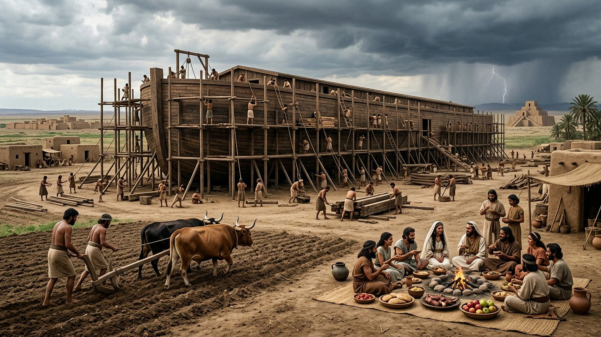
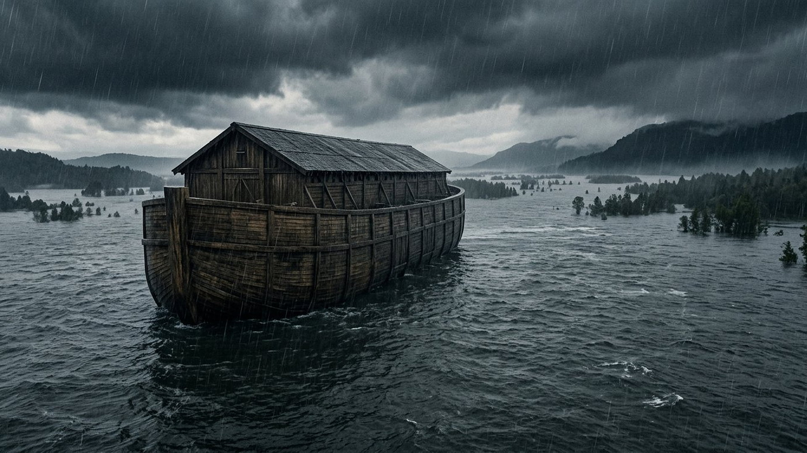
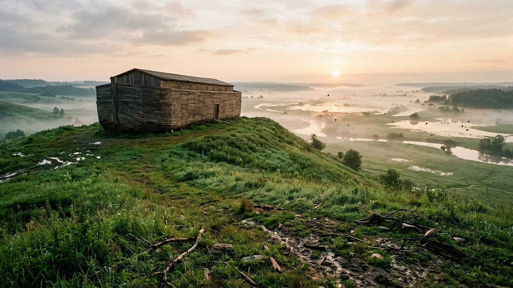

Salle 35 — Matthieu 24 À VENIR
Comme aux jours de Noé : la vie normale avant le basculement
« Ils ne se doutèrent de rien, jusqu’à ce que le déluge vînt et les emportât tous. » — Matthieu 24:39 (d’après Segond 1910)
Reconstitution numérique — l’arche se construit sous les yeux de tous ; la vie quotidienne continue.
La comparaison ne porte pas d’abord sur l’eau
Quand Jésus annonce sa venue, il ne compare pas d’abord deux catastrophes. Il compare deux manières d’habiter le temps. Du temps de Noé, « les hommes mangeaient et buvaient, se mariaient et mariaient leurs enfants » : rien de coupable dans ces gestes ordinaires. Le drame est ailleurs : un avertissement était visible, l’arche se construisait, et pourtant « ils ne se doutèrent de rien » (Matthieu 24:38-39).
Dans la lecture retenue par ce musée, Noé n’est pas un personnage de conte convoqué comme métaphore vague : Jésus parle de ses jours comme d’un passé réel et tire du récit une règle pour l’avenir. La salle ne date pourtant ni le Déluge ni la venue du Fils de l’homme. Elle n’utilise ni une guerre, ni une épidémie, ni une catastrophe climatique particulière comme preuve que « c’est maintenant ». Son objet est plus étroit et plus dérangeant : comment une génération peut-elle être avertie sans se sentir concernée ?
Le parallèle, point par point
Basculez entre les deux scènes. La comparaison de Jésus tient en quatre correspondances.

Le banc des preuves : ce que l’on peut vérifier, ce qui se discute
FAIT ARCHÉOLOGIQUE
La tablette du Déluge (EV-43)
Au British Museum, la tablette K.3375 (VIIe siècle av. n. è.) raconte le déluge mésopotamien d’Utnapishtim : avertissement divin, vaisseau, animaux sauvés, oiseaux lâchés, montagne. Elle atteste qu’une grande tradition de déluge circulait en Mésopotamie bien avant nos manuscrits complets de la Genèse. Elle ne dit pas à elle seule si ces récits gardent le souvenir d’une crue régionale, d’un événement universel, ni lequel dépend littérairement de l’autre.
DÉBATTU
Que dit la géologie ?
Le consensus géologique actuel ne reconnaît pas de couche mondiale synchrone ni de mécanisme hydrologique suffisant pour un déluge récent couvrant toute la planète. En revanche, des crues régionales catastrophiques sont bien documentées en plusieurs endroits du monde. L’hypothèse d’une inondation brutale de la mer Noire (EV-44) reste elle-même discutée dans sa date et son ampleur. Cette salle ne présente donc pas la géologie comme une preuve du récit biblique.
LECTURE PROPHÉTIQUE
Pourquoi le musée retient le parallèle
Parce que Jésus lui-même fonde l’avertissement sur Noé. L’autorité du parallèle, dans ce musée, est d’abord textuelle et théologique : le même Dieu qui a averti autrefois avertit encore, et la normalité des occupations ne neutralise pas l’avertissement. Cette lecture n’a pas besoin de transformer chaque inondation moderne en accomplissement ; elle demande une vigilance morale, pas une chasse aux manchettes.
Quatre leçons, aucune date
1. Le normal n’est pas une garantie
Manger, boire, fonder une famille ne sont pas critiqués. La faute dénoncée est l’aveuglement : laisser les habitudes décider à la place de la conscience.
2. Un avertissement peut être public et ignoré
L’arche n’était pas un secret. De même, la salle 13 présente un signe composite public ; la question n’est pas seulement « est-ce annoncé ? », mais « qu’en faisons-nous ? ».
3. Être prêt n’est pas calculer
Jésus enchaîne par « Veillez donc, puisque vous ne savez pas quel jour votre Seigneur viendra » (Matthieu 24:42). La vigilance biblique est une conduite tenue dans la durée, non une fièvre de dates.
4. La majorité ne fait pas la vérité
Noé est resté minoritaire sans que cela invalide son message. À l’inverse, être minoritaire ne suffit pas à avoir raison : la salle 01 garde ses critères — antériorité, précision, accomplissements vérifiables.
Prescience n’est pas fatalité — la porte de l’arche
Tant que l’arche se construit, l’entrée reste possible. Le récit ne décrit pas des humains enfermés de naissance dans leur destin : il décrit un avertissement, un délai et un choix. C’est la même logique que dans tout le musée : annoncer n’est pas contraindre, et comprendre un signe n’autorise ni panique ni mépris pour ceux qui ne le voient pas.

Salle 13 : le signe composite des derniers jours · Salle 15 : ce qui vient · Salle 01 : reconnaître une prophétie
Écouter la salle
Transcription de la narration
Bienvenue dans cette nouvelle salle du musée. Elle compare deux scènes séparées par une longue histoire : un chantier naval en pleine terre, une famille qui prépare un repas, des champs labourés, puis une pluie qui change tout. Vous examinerez une tablette mésopotamienne conservée à Londres, ce que la géologie reconnaît ou discute, et les raisons pour lesquelles un ancien maître a repris cette histoire comme avertissement. La visite se garde bien d’associer une catastrophe récente à une prédiction. Elle pose une question plus simple : que faisons-nous d’un avertissement lorsque la vie quotidienne semble continuer comme avant ?